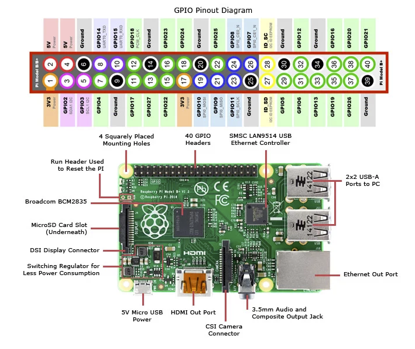

CISC
En arquitectura computacional, CISC (del inglés Complex Instruction Set Computer) es un modelo de arquitectura de computadores.
Los
microprocesadores CISC tienen un conjunto de instrucciones que se caracteriza por ser muy amplio y
permitir operaciones complejas entre operandos situados en la memoria o en los registros, son capaces
de ejecutar varios centenares de instrucciones complejas diferentes siendo extremadamente
versátil.
Este tipo de arquitectura dificulta el paralelismo entre instrucciones, por lo que, en la actualidad, la mayoría de los sistemas CISC de alto rendimiento implementan un sistema que convierte dichas instrucciones complejas en varias instrucciones simples del tipo RISC, llamadas generalmente microinstrucciones.
Los CISC pertenecen a la primera corriente de construcción de procesadores, antes del desarrollo de los RISC. Ejemplos de ellos son: Motorola 68000, Zilog Z80 y toda la familia Intel x86, AMD x86-64 usada en la mayoría de las computadoras personales actuales.
RISC
En arquitectura computacional, RISC (del inglés Reduced Instruction Set Computer) es un tipo de diseño de CPU con las siguientes características fundamentales:
- Instrucciones de tamaño fijo y presentadas en un reducido número de formatos.
- Solo las instrucciones de carga y almacenamiento acceden a la memoria de datos.
- Además estos procesadores suelen disponer de muchos registros de propósito general.
El objetivo de diseñar máquinas con esta arquitectura es posibilitar la segmentación y el paralelismo en la ejecución de instrucciones y reducir los accesos a memoria. Las máquinas RISC protagonizan la tendencia actual de construcción de microprocesadores. PowerPC,2 DEC Alpha, MIPS, ARM, SPARC son ejemplos de algunos de ellos.
ARM
ARM, anteriormente Advanced RISC Machine, originalmente Acorn RISC Machine, es una arquitectura RISC de 32 bits y, con la llegada de su versión V8-A, también de 64 Bits, desarrollada por ARM Holdings
Un enfoque de diseño basado en RISC permite que los procesadores ARM requieran una cantidad menor de transistores que los procesadores CISC. Este enfoque de diseño nos lleva, por tanto, a una reducción de los costes, calor y energía. Estas características son deseables para dispositivos que funcionan con baterías, como los teléfonos móviles, tabletas, etc.
Por ejemplo, el ARM2 es probablemente el procesador de 32 bits útil más simple del mundo, ya que posee solo 30.000 transistores. Su simplicidad se debe a que no está basado en microcódigo (sistema que suele ocupar en torno a la cuarta parte de la cantidad total de transistores usados en un procesador) y a que, como era común en aquella época, no incluye caché. Gracias a esto, su consumo en energía es bastante bajo, a la vez que ofrece un mejor rendimiento que un 286. Su sucesor, el ARM3, incluye una pequeña memoria caché de 4 KB, lo que mejora los accesos a memoria repetitivos.
La relativa simplicidad de los procesadores ARM los hace ideales para aplicaciones de baja potencia. Como resultado, se han convertido en los dominantes dentro del mercado de la electrónica móvil e integrada, encarnados en microprocesadores y microcontroladores pequeños, de bajo consumo y relativamente bajo costo. En 2005, alrededor del 98% de los más de mil millones de teléfonos móviles vendidos utilizaban al menos un procesador ARM.
De esta tecnología surgen procesadores como, por ejemplo, la familia Snapdragon ( de Qualcomm ) basada en el juego de instrucciones ARMv7. O los usados en la Raspberry Pi que usa el conjunto de instrucciones ARM11. 